Speakers
Mohammed is a community catalyst and a true open source believer and has contributed to various open source projects. He has helped to build many IT communities in Morocco and he currently works at Xhub, a DevOps software company as Head Of engineering.
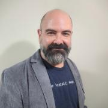
Linux sysadmin and DevOps engineer. Fedora contributor.

Rami is the DevOps engineer on the Public Cloud team at Workday where he works on building, deploying and managing Workday services and infrastructure on AWS using Cloud Native technologies.

Roller Angel spends most of his time helping people learn how to accomplish their goals using technology. He's an avid FreeBSD Systems Administrator and Pythonista who enjoys learning all the amazing things that can be done with Open Source technology, namely FreeBSD and Python, to solve issues. He's a firm believer that one can learn anything they wish to set their mind to. He uses Configuration Management software on FreeBSD written in Python every day as part of his job as a...
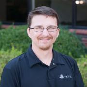
Kenny has worked with UNIX-like operating systems since his introduction to them while serving in the U.S. military in the late 1990s. Kenny has been involved with the Linux community in various capacities such as teaching Linux for a variety of training organizations, deploying Linux in local government institutions up to large Universities, as well as in various large-scale businesses. Kenny enjoys working with open platforms and finding potential new uses for them in a variety of...

Maik Außendorf is a graduated mathematician and studied mathematics and informatics at the University of Münster, Westphalia. In his diploma thesis he focused on the implementation of an artificial neural network in C+ under Solaris and Linux. After his studies he worked as a SAP Consultant at Siemens AG in Colombia.
Between 1999 and 2003 he was Linux System Consultant and branch manager at Suse Linux AG. During this period he carried out Linux- based customer projects, starting from...

Professionally Joe has worked in Product Development for over 30 years starting out at Texas Instruments in the 1980s and now works for Schnieder Electric in the Industrial Automation R&D group creating control systems to automate Industrial facilities including Oil Refineries, Nuclear, and Coal Power Plants.
Joe began his Open Source contributions bringing mesh wireless networking to to the Amateur Radio community. In 2013, he established the first wireless hub site in Orange...

Jono Bacon is a leading community manager, speaker, author, and podcaster. He is the founder of Jono Bacon Consulting which provides community strategy/execution, developer workflow, and other services. He also previously served as director of community at GitHub, Canonical, XPRIZE, OpenAdvantage, and consulted and advised a range of organizations including Huawei, GitLab, Sony Mobile, Deutsche Bank, HackerOne, and others. He is the author of the critically-acclaimed The Art of Community, is...
Lori joined her first Internet startup as a senior UNIX system administrator at a company that eventually went public. This got her hooked on the thrilling growth and success process and eventually she started an international executive consulting practice. In 2017 she co-founded the ShellCon infosec conference in Southern California and developed RaiseMe, a unique career development effort for nonprofits. RaiseMe has successfully helped people re-career into their first infosec engineering...

Josh Berkus spends his time messing around with containers, automation, and community-building for Red Hat Inc. Prior to that, he spent nearly two decades working on PostgreSQL. From his home in Portland, he cooks, makes pottery, and looks after a cat.
Silona Bonewald is the Executive Director for IEEE SA Open, a comprehensive platform offering the open source community cost-effective options for developing and validating their projects. Previously she was vice president of community architecture at Hyperledger, a global open source collaborative effort hosted by The Linux Foundation, where she integrated leaders in finance, banking, Internet of Things (IoT), supply chains, and manufacturing. Other notable career accomplishments include,...

Michelle Brenner (she/her) is a Senior Software Engineer with 13 years of experience. She started in engineering support and now leads large-scale development projects. A Philadelphia native who currently calls Los Angeles home, she is an art school graduate and a self-taught engineer. During her career, she has most enjoyed creating software that enables others to succeed, from digital artists to restaurateurs to fellow engineers.
Michelle has shared her technical travails, team-...
Veteran cook and chef turned Linux SysAdmin, Brandon has also worked deploying OpenStack builds for companies around the world. Currently, he is the Director of Customer Support for Linux Academy and an avid music trivia fan.
After a couple decades on-call, Karen has developed a phobia of not getting enough sleep. She spends her spare time rendering puns in yarn, solving bizarre twisty puzzle cubes, and tripping over cats.
Karen also has a blog, where she shares techniques, stories, and rants about Site Reliability, DevOps, and other stuff.

Chet is currently a Principal Engineer at Cisco focusing on delivery engineering for various k8s and container based products.
Chet has more than 20 years of experience working on interesting problems in IT. His career started at a VAR building computer and small business networks. Since then he has held a number of positions including the Director of Enterprise Unix Systems at the University of Southern California (which he graduated from in 2006) and Senior Systems Architect at...
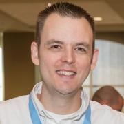
Doug Burks started Security Onion in 2008 to provide a comprehensive platform for intrusion detection, network security monitoring, and log management. Today, Security Onion has over 800,000 downloads and is being used by organizations around the world to help monitor and defend their networks. In 2014, Doug started Security Onion Solutions LLC to help those organizations by providing training, professional services, and hardware appliances. Doug is a CEO, public speaker, teacher, former...
Lucy Burns is a product manager at PlanetScale whose experience directing the evolving stages of PlanetScale's database-as-a-service product gives her a unique perspective on the engineering journey. Lucy is passionate about taking complex systems and turning them into easy-to-use products. When she’s not thinking about product management, she writes poetry, plans international adventures, and tries to spend as much time outdoors as possible.

After installing Linux on his old i386 from a CD in the back of a Linux book he was given in 1995, Clint went on to be a Linux and open source power user. Splitting career time between software development and web scale operations gave Clint early insight into what is now known as the DevOps culture. Since then Clint has worked for Canonical on Ubuntu Server, HP on Helion OpenStack, IBM on OpenStack and BlueMix, and at GoDaddy bringing CI/CD and heavy automation to management of a 100,000+...
Vagrant Cascadian is a Debian Developer since 2010, maintaining
packages such as u-boot, arm-trusted-firmware, and opensbi.
Starting In 2015, Vagrant built a diverse ARM build farm out of a
variety of single board computers for the Reproducible Builds project,
which now rebuilds thousands Debian armhf packages per day. As a
result, support for many of these boards is enabled in the Linux
kernel packages shipped in Debian, and some have debian-installer...
Davide Cavalca is a Production Engineer at Meta on the Linux team. Davide has been working in the systems space for over 15 years, always with a strong focus towards open source and automation.
Nathan has had three software/IT related careers: flight simulation, software test and security. He has worked in big corporations and small companies and in verticals such as defense and consulting. It took him some time to get familiar with the cyber / information security field and wants to help others get in and get spun up more quickly. He holds the CISSP and CEH certifications.
Before he got into security he worked for Link Simulation (now part of L3), Lockheed-Martin and Boeing...
Solomon is a MySQL certified DBA and a former director of LAMPSIG.
He works as a professional Database Administrator for Tivo in Alviso and is a co-author of the MySQL Cluster Certification Study Guide.
Iván Chavero wrote his first programs in BASIC at the age of 10, promoter and developer of free software since 1997, he is a systems engineer from the Autonomous University of Chihuahua where he spent over 15 years managing high availability systems, he is currently Senior software engineer at Red Hat. Iván, actively contributes to several open source projects mostly related to OpenStack and cloud computing.
He is a founding member of the Chihuhaua's Linux user group and...
Murugappan Chetty is a staff software engineer at Box where he builds and maintains a platform using kubernetes and istio. He also builds the tooling to make the process of deploying and observing applications simple. He is an opensource enthusiast, steering commitee member of knative and has given talks at Kubecon, Istiocon, SCALE, KnativeCon and ServerlessConf.

Joe Conway is a technology executive with skills in a wide array of disciplines and extensive international business experience. He has been involved with the PostgreSQL community since 1998, presently as a PostgreSQL Committer, Major Contributor, and Infrastructure Team member. He is also the author and maintainer of a PostgreSQL procedural language handler for the R language, PL/R. Joe is currently Head of the PostgreSQL Contributors Team at Amazon Web Services, RDS Open Source Databases...

Since the age of 10 I’ve always been passionate about computers. I’ve been working with them ever since. In 2005 I got my degree in computer science. I used to work at a major Belgian university where I was developing the e-learning applications. In that position, I was the one who looked after the databases. From there on I grew to be their MySQL DBA. In 2017 I left the university and joined Pythian as a MySQL Database Consultant. Currently I am working at PlanetScale to support large...

Jon A. Cruz is a professional developer with over 20 years of experience, working extensively in multimedia, including programming and 3D art creation, and has developed for a wide variety of platforms. Work includes R&D for mobile and other devices, servers for large mail and messaging systems, enterprise security applications, and user interface design and development..
He had participated as a mentor in Google's Summer of Code since its first year with Inkscape and...

Peter is a system engineer working as evangelist at One Identity, the company behind the syslog-ng logging daemon. He helps distributions to maintain the syslog-ng package, follows bug trackers, helps syslog-ng users, and talks regularly about sudo and syslog-ng at conferences (SCALE, FOSDEM, Libre Software Meeting, LOADays, etc.). In his limited free time he is interested in non-x86 architectures, and works on one of his PPC or ARM machines.

Pat David is a member of the GIMP team who has written extensively about using GIMP for photo processing (along with other software and techniques).
A few years ago he found the community and resources lacking for doing photography with Free Software. What was available was low-effort and low-quality mostly. In an attempt to address this, he created PIXLS.US...

Just as at home with electro-acoustic synthesizer electronics as with site reliability engineering, I find joy in operating inherently chaotic complex systems. My expertise is a variegation of data-center operations, storage hardware, distributed databases, IT security, support services, observability systems, education, advocacy, and SRE leadership. With degrees in music performance and composition, I have a passion for exploring relationships between the artistic mind and the operation of...

Zeke Dean, a highly experienced streaming analytics architect with expertise in both Kafka and Apache Druid. An expert at wearing multiple hats to satisfy customers in their specific roles. Delivered highly scalable code and distributed systems. Numerous years of experience building big data systems for enterprises all over the world -- from banks in the Middle East and india to major publishing houses in the United States and a payment platform in Japan . Zeke now works with businesses to...
Darren has 20 years of professional experience as a technology professional. His experience includes 10 years of developing and delivering software development, information technology, and project management training programs. As an independent technology consultant he implements software solutions to solve business problems for clients across multiple industries and also runs PostgresCourse.com.
Simon Elmir started using Linux in the early 00's, building his early skills on computers built from hand-me-down machines and scavenged parts. He's worked as a sysadmin in places like computer labs, datacenters, and web hosting companies. Most recently, Simon works as a Production Engineer on infrastructure for artificial intelligence systems at Meta (Facebook).
I am Galen. A self-taught geek from the Pacific NW. My professional life has been built upon automating everything I can. Currently I am the Federal Solutions Architect for Chef. I am responsible for helping the Federal Government, DoD and associated integrators move into the DevOps space. I currently live in Arlington, VA and am originally from Seattle, WA with a stint in Bozeman, MT. I have extensive experience in Windows, Cloud Migrations, Chef and Yak Shaving.

With experience writing software and managing teams for leading Web companies (Edmunds, Intuit), plus new concept startups, John has a strong background in Web software engineering and release management. He has worked with concurrent, real-time systems developing big-data, Cloud-based Java and Python applications. John currently serves as lead developer for NASA's Exoplanet Watch at...

Ron Evans is an award-winning software developer and expert in robotics/IoT/computer vision who is very active in the free and open source community. He has helped clients such as AT&T, Intel, and Northvolt solve some of their most difficult technical and business problems.
Ron has spoken at conferences such as MakerFaire, OSCON, GopherCon, FOSDEM, and the MIT Technology Review. He has been profiled in the press by Wired, Fast Company, and The New York Times. Ron has published...
Peter Farr is a software engineer working at PlanetScale on their proprietary and open source Kubernetes Operators, and core Vitess. He has a deep passion for building loosely coupled software solutions that scale, and is a huge fan of Rust, Golang, Kubernetes, and Vitess.

Developer Advocate with 15+ years experience consulting for many different customers, in a wide range of contexts (such as telecoms, banking, insurances, large retail and public sector). Usually working on Java/Java EE and Spring technologies, but with focused interests like Rich Internet Applications, Testing, CI/CD and DevOps. Also double as a trainer and triples as a book author.

Stephen Frost is a PostgreSQL Major Contributor and Committer who implemented the PostgreSQL role system and column-level privileges, and who has made contributions to PL/PgSQL, PostGIS, the Linux kernel, and Debian. He has broad experience with the PostgreSQL authentication and authorization system, Multi-Version Concurrent-Control (MVCC), performance tuning (both system-wide and for specific queries), hacking on PostgreSQL itself, the PostgreSQL community, and PostGIS.
Tess Gadwa is founder and product architect at Lotus.fm, a music and information discovery startup.
In January 2011, Tess launched Yes Exactly Inc., specializing in rapid deployment of high quality custom sites and apps for creative professionals, early stage startups, and community organizations. Her company incorporated in December 2012 and continues to serve customers in Massachusetts and across the United States.
She led the push to release Zappen ®, the first fully...
Morgan writes documentation for services used by millions of people every day, pretends to be a fox on the internet, and spends far too much time on terrible jokes.
Matthew Garrett is a Linux kernel developer, specialising in low level interactions between the kernel and firmware. He's represented Red Hat on the UEFI and ACPI specification bodies and has some unfortunate pains in his liver as a result. Please do not ask him about fruitflies.
Joshua Gay is the Sr. Manager of IEEE SA Open Source Community & Infrastructure at the IEEE Standards Association (IEEE SA). He has over 20 years of experience working with the free and open source software world, including roles as advocate, developer, licensing and compliance manager, communications director, and community manager. Josh has a strong background in both nonprofit organizational management and textbook publishing. Before joining IEEE, he served as the campaigns manager...
Deb is the Executive Director of the FreeBSD Foundation, joining as the first employee back in August, 2005. Prior to that, she spent two decades working as an embedded firmware engineer, technical marketer, and technical sales engineer in the data storage industry, before venturing in the world of open source and operating systems. She's now spending more time learning about operating systems and integrating more of her day-to-day Foundation work running on a FreeBSD system. Besides...
Brett is a Breaker of Web Applications, Leader of a DefCon Group, Maker of Tasty Food, and Owner of a Majestic Beard. He has over 17 years of experience in IT and Security, specializing in Web Application Pentesting, PCI practices, vulnerability scanning, and management.
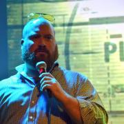
Waldo is a Tech Evangelist for Datadog, which means that he gets to travel and meet people, and advocate on their behalf. He is a recovering SRE and Operations Engineer, has been active in the DevOps community for quite some time, and is keen on helping organizations stop hurting themselves. Despite being a raging introvert, he enjoys public speaking. In his spare time, he enjoys collecting hobbies that he doesn't have the time to engage in. He hates writing about himself in the...

Julie Gunderson is a Sr. Reliability Advocate at Gremlin, where she works to further the adoption of Chaos Engineering principles and methodologies. Over the last seven years, Julie has been actively involved in the DevOps space and is passionate about helping individuals, teams, and organizations understand how to leverage best practices and develop amazing cultures. Julie is also a founding member of DevOpsDays Boise, which recently celebrated its 4th year. When Julie isn’t working, she is...

Magnus Hagander is a member of the PostgreSQL Core Team and a developer and code committer in the PostgreSQL Global Development Group.
Magnus is one of the original developers of the Windows port of PostgreSQL. These days, he mostly works on other parts of the PostgreSQL backend, recently with a focus on security features, monitoring and backup/replication interfaces and tools.
He is also one of the core members of the postgresql.org infrastructure team, maintaining the servers...

der.hans is a Free Software, technology and entrepreneurial veteran. He is a repeat author for the Linux Journal with his article about online privacy and security using a password manager as the cover article for the January 2017 issue.
He is chairman of the Phoenix Linux User Group (PLUG), BoF organizer for the Southern California Linux Expo (SCaLE) and founder of the Free Software Stammtisch.
He presents regularly at large community-led conferences (SCaLE, SeaGL, Tux-Tage,...
Thomas is the creator of the Salt infrastructure management system, one of the largest and fastest growing open source projects today.
Thomas is also the founder of Salt Stack Inc. the company delivering support for and solutions based on Salt.
Jason Hibbets is a senior community architect at Red Hat which means he is a mash-up of a community manager and project manager designing programs for people to participate in communities. His current role involves building community interest for #EnableSysadmin--a watering hole for system administrators. He is the author of...

Developer for most of his life and open source enthusiast and advocate for big part of it. Over the time involved in openSUSE and Gentoo communities, activelly participating on various local events and even cofounded the biggest opensource conference in Czech republic. Started his profesional career at SUSE and during whole his career worked on open source projects. Interest in various hardware gadgets brought him to his current job where he is leading a departement full of amazing people...
Elizabeth K. Joseph leads the Open Source Program Office for IBM Z (mainframes!). Previously, she spent time working on Apache Mesos, and four years as a systems engineer on the OpenStack Infrastructure team and six years on the Ubuntu Community Council and has held various roles in the Ubuntu community and is the co-author of The Official Ubuntu Book, 8th and 9th Editions. At home in San Francisco, she sits on the Board of Directors for Partimus.org, a non-profit in the Bay Area providing...
You can do this later
Samuel Karp is a Senior Software Development Engineer at Amazon Web Services, working on the Container Services team. For the past five years, Sam has helped build and operate Amazon Elastic Container Service and AWS Fargate. Sam currently works on firecracker-containerd, an open-source project that bridges the container ecosystem with virtual machine technology for increased isolation. Sam has been a Linux enthusiast since 2004 and a container enthusiast since 2014.
Jonathan Katz is a Principal Product Manager Technical at AWS for Amazon RDS. Prior to this, he was the VP of Platform Engineering at Crunchy Data, focused on managing PGO, an open source Postgres Operator.
Jonathan is a member of the PostgreSQL Core Team and involved in various governance aspects of the PostgreSQL Global Development Group. He serves as a Secretary and Director of the nonprofit PostgreSQL Community Association of Canada and is a Director of the nonprofit United States...
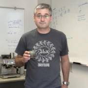
Abe Kazemzadeh is an Assistant Professor in the University of St. Thomas Graduate Programs in Software department. His undergraduate interest in linguistics led him to graduate studies in computer science that focused on natural language processing and a career that has included research and software engineering in speech recognition, voice and text dialog systems, sentiment and demographic analysis of social media, social network analytics, and extracting machine-learned signals from...
Bob is a Program Manager at the Google Open Source Programs Office with a focus on Cloud Native computing. He serves the Kubernetes project as a Steering Committee member and chair of the Contributor Experience Special Interest Group and has been involved in many other cross-cutting areas of the project. Bob comes from an academic background, spending 15 years at the University of Michigan with a later focus on computational research. As a Cloud Native Computing Foundation Ambassador, Bob...

Bryna is a tech industry leader passionate about bringing people together and creating a more positive work environment in technology. As the COO and Co-Founder of STAAJ Solutions, she leverages her Agile TechOps knowledge to bridge gaps, inspire change, and provide lean operations to businesses in their crucial early stages.
Bryna helped shape the tech landscape in Southern California as Co-Founder...

Dima is a long-time user and contributor to various Free Software projects. He lives in the shell inside Emacs on his Debian box, and is constantly looking for ways to save keystrokes. He plays with robotics tools during the day, and tries to give away as much of his work as possible.

Ilya Kosmodemiansky is a CEO and co-founder at Data Egret. A consultancy specializing in PostgreSQL migration, maintenance and support.
Ilya has a broad experience working with PostgreSQL as consultant, architect and administrator. His main focus is database performance and optimization. He sees the mission of PostgreSQL in substituting the commercial databases in high-performance mission-critical applications.
His interests are promoting PostgreSQL as enterprise-ready database...
Alexander is the CEO of Tempesta Technologies, Inc., and is the architect of Tempesta FW, a high performance open source Linux application delivery controller. Alexander is responsible for the design and performance of several products in the areas of network traffic processing and databases. He designed the core architecture of a Web application firewall, mentioned in the Gartner Magic Quadrant, and MariaDB system versioning.

Bradley M. Kuhn is the Policy Fellow and Hacker-in-Residence at Software Freedom Conservancy (SFC). Kuhn began volunteering in the software freedom movement in 1992 — as an early adopter of Linux and contributor to many FOSS projects including Perl. As Free Software Foundation (FSF)'s Executive Director from 2001-2005, Kuhn led FSF’s GPL enforcement and invented the Affero GPL. Kuhn was SFC’s primary volunteer from 2006–2010 and its first...

Stuart Langridge does consultancy and custom development for the web, mobile web, and Ubuntu. Code, writings, and business details (and the occasional rant) are to be found at http://kryogenix.org and @sil on Twitter; Stuart is to be found outside in the rain looking for the smoking area.

Intending to become a programmer, Dustin got sidetracked and spent more time than he cares to admit doing theoretical physics and mathematics with no relevance to software. He's better now.
Some little-known facts about Dustin Laurence:
He first used a computer playing Colossal Cave Adventure and the
bootleg Fortran IV version of Zork over a glass teletype and an
acoustic modem.
His first good programming language was C. He lies and...

Tom is an artist who has been using and making various open source tools to help produce his artwork for almost 20 years. For instance, he created desktop publishing software called Laidout to produce his comic books, and is now exploring the many aspects of video game production. He is based in Portland, Oregon, USA.

I love Coding, I grew up in a small town in Chile and one weekend, 16 years ago, I had the flu and could not go out. I decided to learn how to code in Python and that was the beginning of the road that would moved us all to the Northern California so that I could join the Production Engineering team at Instagram. Also like eating, drinking and cooking (in that order).
Julien is a software engineer working at Containous in the TraefikEE and Maesh team. His special interest is in deploying applications scalable by using cloud and container technologies.
Ben is a hacker with a habit of collecting side projects, including network administration for his local hackerspace. Over the past few years, he's been biking around the Pacific Northwest and experimenting with different network technologies, working to make more reliable and more capable networks possible for everyone.

Georg’s mission is to make open source more professional by using community metrics and analytics. Georg cofounded the CHAOSS Project to advance analytics and metrics for open source project health. Georg is an active contributor to several projects and often presents on open source topics. Georg has an MBA and a Ph.D. in Information Technology. As the Open Source Strategist and Director of Sales at Bitergia, Georg helps organizations and communities adopt metrics and make open source more...
Mark has 30 years of experience working with Advanced Analytic, Distributed Computing and Data platforms. He works at MemSQL as the Director of Technical Alliances, focused on helping customers leverage modern Operational and Analytic capabilities to achieve a competitive advantage. Mark has a BS in Computer Science from North Carolina State University and also holds a Six Sigma Black Belt.
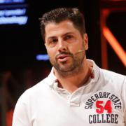
Manrique is the CEO and shareholder in Bitergia and a free, libre, open source software development communities passionate. He is a graduate Industrial Engineer with research and development experience from the Technological Center for Computer Science and Communications of the Principality of Asturias (CTIC), W3C working groups, Ándago Engineering, and Continua Health Alliance. Former executive director of the Spanish Open Source Enterprises Association (ASOLIF), and expert consultant for...

Federico Lucifredi is the Product Management Director for Ceph Storage at Red Hat and a co-author of O'Reilly's "Peccary Book" on AWS System Administration. Previously, he was the Ubuntu Server product manager at Canonical, where he oversaw a broad portfolio and the rise of Ubuntu Server to the rank of most popular OS on Amazon AWS. A software engineer-turned-manager at the Novell corporation, he was part of the SUSE Linux team, overseeing the update lifecycle and...
Human.
Senior Solutions Engineer by way of Unix/Linux Systems Administration and DevOps (or OpsDev).
Does crazy stuff from time to time.
Brian MacDonald has been an editor of technical publications for over 20 years, and currently acquires new projects for Pragmatic Bookshelf. For most of that time, he ran his own business, with clients including O’Reilly, Pragmatic, Wiley, Apress, Wrox, Osborne, and Manning. He also spent a few years as a technical writer at Microsoft. He has co-authored two editions of Learning C# and Learning ASP.NET for O’Reilly. He lives in southeastern Pennsylvania with his wife and son. You can follow...
Ell Marquez is a proud advocate of Hacking Is Not and Crime and Operation Safe escape. She has traveled the world for five years, educating security practitioners on subjects from on-prem infrastructure to the cloud and everything in between. As part of her journey in 2022, Ell transitioned to GRIMM with the focus on researching and training organizations on strengthening their defenses against the latest cyber threats.


Don Marti has written for Linux Weekly News, Linux Journal, and other publications. Don co-founded the Linux and web consulting firm Electric Lichen, which he and business partner Jim Gleason later sold to VA Linux Systems. Don has served as president and vice president of the Silicon Valley Linux Users Group and on the program committees for Uselinux, Codecon, and LinuxWorld Conference and Expo. He was a key organizer for Windows Refund Day, Burn All GIFs Day, FreedomHEC, and the movement...
At NGINX, Dave works with DevOps, developers and architects to realize the advantages of modern microservice architectures and orchestration in distributed systems, especially for today's fast-moving cycles.
Dave has been a champion for open systems and open source from the early days of Linux to today's world of clouds and containers. He speaks on topics such as the real-world issues associated with emerging software architectures and practices. He covers topics such as...
Jessica McKellar is a founder and the CTO of Pilot, a bookkeeping firm powered by software. Previously, she was a founder and the VP of Engineering for a real-time collaboration startup acquired by Dropbox, where she then served as a Director of Engineering. Before that, she was a computer nerd at MIT who joined her friends at Ksplice, a company building a service for rebootless kernel updates on Linux that was acquired by Oracle.
Open source meets criminal justice reform in Jessica’...
Oscar Medina has over 20 years in the technology sector. Oscar’s experience dates back to the Dotcom boom era, where he managed eCommerce sites based on UNIX and written in Java. He is an advocate for DevOps practices with a focus on cloud-agnostic tools and modern frameworks. Oscar’s software development coupled with cloud infrastructure (Dev and Ops) has been instrumental in helping companies realize the benefits of cloud solutions by mentoring teams in migrating legacy monolithic...

Carlos Meza has gone from sysadmin to developer. At Verizon, he managed large scale infrastructure for the EdgeCast CDN. As an SRE for Everbridge, he was responsible for systems that provided real-time alerting for those in life-threating situations. At Disney, he has developed tools for auditing for compliance and security.
Carlos is a long-time member of the SGV Linux User Group; runs the Software Engineering Meetup in Los Angeles; mentors at Girls Who Code.
For fun, he...
Todd has been involved in Open Source since the early 90s and has contributed to various projects such as ISC cron, OpenBSD, Sendmail and Sudo. He is best known as the Sudo maintainer for the past 25 years.
Joe is a security researcher who loves to experiment with embedded devices, signals, and really anything with electrical signals. He lives in a server room and would love to be let out from time to time. When not stuck in a server room or being electrocuted he also dabbles with cloud research. He is currently a full time student at California Polytechnic Pomona.
Hi, my name is Ikenna Ogbogu, and I am currently a sophmore at Polytechnic. Although I have shown a strong passion for computational thinking and programming since 7th grade, I enjoy playing the alto saxophone and multimedia art. I accredit my argumentative personality to my eagerness for debate, which Is why I'm on my schools policy debate team. Currently, I explore my questions related to web development, computational theory, and programming in my AP Conputer Science class. My teacher, Mr...
Heather Osborn, Engineering Manager, Developer Enablement, Zapier
Heather Osborn has been working in technology as a system and operations engineer and manager for the last 25 years, moving from physical to cloud infrastructure.
Heather is an avid long distance runner who has lots of time to think about these things while pounding the pavement.

Ray is a Community Manager at PingCAP where he is helping to grow the TiDB community. Prior to PingCAP, Ray managed open source communities at Cube Dev, GitLab and the Linux Foundation. Ray has been a speaker at open source conferences such as All Things Open, Community Leadership Summit, FOSDEM, GitLab Commit, Open Source Summit, and SCaLE.
Ray lives in Sunnyvale, CA with his wife and daughter and all three are loyal season ticket holders of the Bay FC women's soccer team.
Jared Pane is a Senior Solutions Architect for Elastic. Prior to joining Elastic, he worked at Red Hat as a DevOps Specialist helping to build, streamline, and secure Open Source initiatives throughout the State, Local, and Higher Education Community in the West. He is currently a contributing member to the State of California Open Source Policy, helping to build software integrations that accelerate application development, deployment, performance, and monitoring.
Murriel is a Customer Engineer with Google Cloud, and works with enterprise customers to solve technical and business challenges and build applications on the cloud. She is currently enthusiastic about DevOps and Platform Engineering, Kubernetes, and the Developer Experience. She leads the Social Impact committee for the local chapter of Women@Google and is an advocate for mentorship and community building. Murriel also holds a position on the executive...
Renee is a career changer who entered tech after a background in Medical Anthropology, which she used to help a variety of businesses streamline their processes. Constantly intrigued by data collection, storage, and management, she ventured into PostgreSQL and hasn't looked back. She brings her previous non-technical experience as well as her work doing Data Quality Assessments for startups to help you prevent common data errors.
Paris is a Program Manager in Google's Open Source Programs Office focusing on the upstream Kubernetes Community. She is a member of the Kubernetes Steering Committee, co-chair of the special interest group for Contributor Experience, and an organizer of Bay Area Kubernetes Meetup with 4,000 members. She has 16 years of professional experience in community management, attracting and retaining engineering talent for open source organizations, and technical event planning. She has been...

Pep has a broad experience in several database platforms, but in recent years he has focused on MySQL. His work abides by the motto of Mission Control at NASA: “Tough and competent”. Tough means you are accountable for what you do or fail to do, it means compromise and responsibility. Competent means that you take nothing for granted and you must never be found short in knowledge and skills. This is how Pep feels and lives database management. He is also interested in applying Lean culture...
Hacks stuff. Internet dragon. Engineer. Breaks things for money. Tells people they're wrong.
Security Analyst for ISE.
Bill Pollock founded No Starch Press in 1994 and the company has been going strong ever since. One of a handful of independent tech book publishers, No Starch Press just finished its best year ever in 2019 and is growing its list significantly in 2020. The company continues its emphasis on making the books that geeks, hackers, and nerds care about. No Starch Press is always looking for new, passionate authors. Write to their editors at editors@nostarch....
Francis is a Solution Architect at GitLab, where he helps customers understand the product, extract the most value from it, and ultimately love it. He started coding at age 10 and his entrepreneurial zeal kicked in with his first paying client at 16. After graduating from Carnegie Mellon University, he embarked on a varied career that included VP of Engineering at a marketing automation startup, product management at a Content Delivery Network, and many freelance application projects....
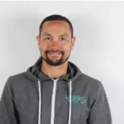
Charles Pretzer is a field engineer at Buoyant, where he spends his time collaborating and engaging with the open source community of the CNCF service mesh, Linkerd. He also enables production level adoption by helping companies integrate Linkerd into their Kubernetes based applications. Charles has spoken at meetups and conferences hosted by ABN Amro, Macnica, and NGINX Conf. When he's not presenting or in front of a computer, he's riding a motorcycle or making a delicious mess in...
Dad, cyclist, software developer.
After graduating the Goethe-Universität Frankfurt with a Masters degree in computer science I started working at uib gmbh.
Here I am responsible for large parts of the netboot process of opsi. In addition I also work in the backend with my colleagues.
Apart from work I am a passionate road-bike cyclist. Getting to my own physical and mental limits is what inspires me.

Kyle Rankin is a security and infrastructure expert with over two decades of professional Linux experience. He is the author of How To Write A Tech Book, The Best of Hack and /: Linux Admin Crash Course, Linux Hardening in Hostile Networks, DevOps Troubleshooting, The Official Ubuntu Server Book, Third Edition, Knoppix Hacks, 2nd Edition, and Ubuntu Hacks, among other books. Rankin was an award-winning columnist and tech editor for Linux Journal, and speaks frequently on Free and Open Source...

Rob Richardson is a software craftsman building web properties in ASP.NET and Node, React and Vue. He’s a Microsoft MVP, published author, frequent speaker at conferences, user groups, and community events, and a diligent teacher and student of high quality software development. You can find this and other talks on his blog at https://robrich.org/presentations and follow him on twitter at @rob_rich.
I motivate, mobilize, and connect cross-functional teams with technical solutions and support and provide customer-focused Computer Professional services with System Administrator experience in commercial and non-profit industries.
I deliver system, network, and security support in a wide variety of business and home environments. I partner with clients for training and end-developer support efforts, especially in the areas of configuration management, operating system integration...
__q_itok=HuhNtcUI.jpg)
Mark Roden is VP of Data at Crexi, a commercial real estate company dedicated to connecting brokers and investors. He is also the CEO of Tetra Bio Distributed, a non-profit dedicated to the design and creation of open source medical hardware. Tetra was founded within a few months of the outbreak of COVID-19, and our devices center around making medical devices more accessible to makers and anyone interested in medical technology.

Gabrielle Roth has been using Postgres since sometime in the version 7s, and thinks that the best part of using Open Source software is the culture of sharing knowledge. She's a co-founder and former co-lead of PDXPUG.

Alexander is a Principal Security Engineer at Amazon Web Services (AWS), leading RDS security team.
Alexander worked with MySQL since 2000 as DBA and Application Developer. Alexander was working as MySQL principal consultant/architect for over 15 years, started with MySQL AB in 2006 (company behind MySQL database), Sun Microsystems, Oracle and then Percona. He helped many customers design large, scalable and highly available MySQL systems, optimize MySQL performance and improve MySQL...
Karen Rucker is an RF engineer in the aerospace industry and a General Class ham. She is passionate about antennas and space communication. Previously, Karen was a 2017 Brooke Owens Fellow at HawkEye 360, working with software defined radio and RF-based analytics and geolocation, and has also worked at NASA Kennedy Space Center and Lockheed Martin Aeronautics. She graduated in 2019 with a B.S. in Electrical Engineering from Texas Tech University with a focus in RF and microwave design.
Andreas Scherbaum is working with PostgreSQL since 1997. He is involved in several PostgreSQL related community projects, member of the Board of Directors of the European PostgreSQL User Group and also wrote a PostgreSQL book (in German).
Since 2011 he was working for EMC/Greenplum/Pivotal and tackled very big databases. Nowadays he does the same - but with maybe even more and bigger databases - for Adjust GmbH in Berlin.
Jennifer started Sound Data in 2008 after ten years building research databases at the University of Washington. She has built a wide variety of data systems for clients in science and engineering. She holds a MS from the University of Washington and is a certified Oracle Applications Developer.
Vicky “Tanya” Seno is a Computer Science Professor at Santa Monica College, in Los Angeles California. At SMC she teaches numerous Amazon Web Services courses covering Computing Services, Containers, Kubernetes, EKS, ECS, Serverless, Networking and Security. Since accepting a faculty position at SMC in 2018, Vicky has helped develop an AWS Cloud Computing College Degree. She is also a co-organizer of AWS Cloud Day Conference at SMC that includes AWS speakers, AWS workshops and an AWS CTF...
Suchakra is currently a Staff Scientist at ShiftLeft Inc. where he plays around with large graphs and hunts bugs. He completed his PhD in Computer Engineering from École Polytechnique de Montréal where he worked on eBPF and hardware-assisted tracing techniques to advance systems performance analysis. On related topics, he has delivered talks & trainings at meetups/conferences such as USENIX LISA, All Systems Go, Papers We Love, Tracing Summit etc. He also developed one of the first...
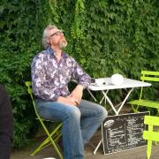
Brett is a hacker, entrepreneur and technologist, working at the intersection of human rights and technology, particularly in the areas of privacy and Internet decentralisation.
He lives with his wife on a little farm in central France where he drives tractors, does strange things with IPv6 and multicast, and studies foreign languages.
Brett is concerned that our Internet is under threat from Criminals, Corporations and Governments, and is trying to do something about it. If...

Ty works with SMBs to achieve compliance for PCI and SOC2 standards. He has been working in the industry for over 25 years as a programmer, systems architect, and manager of development, IT and DevOPs teams. He was a cofounder of Kagi, an e-commerce company based in the San Franciso Bay Area where he worked on Payment systems for 15 years. He was one of the original team members of LoopPay (a.k.a SamsungPay Boston) where he was a Director of Security and Compliance for 5 years. When he is...
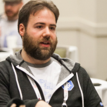
Jeffrey (@jeefy) is a Principal Developer Experience Engineer at the CNCF, with a focus on improving community and project automation. Before that, he’s worked at Red Hat and the University of Michigan focusing on Cloud Native technologies and CICD patterns. Jeffrey has been a contributor to upstream Kubernetes, helping in SIG-Contribex, SIG-Release, and SIG-UI. He passionately advocates for open source development and recognizing and alleviating burnout.

John has over 30 years of experience in the aerospace industry as a software developer, systems administrator, systems integrator, and systems security engineer. John is a retired U.S. Navy Commander where he served as an Information Corps Warfare Qualified officer. John currently serves as an adjunct faculty member at a local community college, teaching courses in ethical hacking, Linux operating system, and computer forensics. He has also served as a mentor instructor for SANS. A graduate...

Many years ago amongst the snow drifts and tundra of the great frozen north, Michael Starch earned his Bachelor’s degree in Computer Engineering from the University of Michigan. Leaving his beloved homeland behind, he started a career at NASA's Jet Propulsion Laboratory in sunny Pasadena. He has remained there ever since working as a developer, operator, engineer, and open source community manager on a myriad of projects and missions. He also mentors at San Marino High School on Fridays....
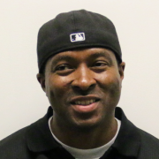
At 18, Sha was sentenced to 27 years to life in prison for assault with a firearm, a crime that left a person critically injured. He ultimately served 18 years in the California state prison system before his sentence was commuted by Governor Jerry Brown in August of 2018 and he was released.
While in prison, Sha committed himself to change—immersing himself in multiple self-help groups that dealt specifically with accountability and remorse, and meeting with survivors of crime, which...

Dave Stokes is an open-source software and database fan. He has worked at companies ranging alphabetically from the American Heart Association to Xerox, has three college degrees, enjoys riding his Honda Goldwing motorcycle, lives in North Texas, and started with UNIX in the Version 7 days. He is the author of MySQL & JSON - A Practical Programming Guide, which is available at Amazon.com
Spencer Sullivan was taken on as one of two interns at JPL in the Fall of 2019 to improve the publicly view-able documentation on HySDS (the Hybrid cloud Science Data System), an open source data processing system. Over the course of 4 months, he worked directly with the team, his staff mentor, and his partner intern to develop the HySDS wiki. He is currently attending Pasadena City College, majoring in Computer Science...

Patrick Swartz has been a Linux and opensource advocate since the mid-1990s working with start-ups to Fortune 100 companies to develop opensource strategies. As a father of 8 kids he continually looks for ways to engage his kids in the opensource world.
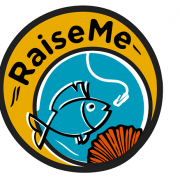
We are a team of trained do-gooders dedicated to helping career dreams become a reality. By day we are hiring managers, engineers, executives, entrepreneurs, recruiters, or military veterans. At RaiseMe, we're your mentors.
The RaiseMe career development effort was founded at the first ShellCon infosec conference in Southern California. There was so much demand for this kind of service, RaiseMe took on a life of its own. Now the RaiseMe arm of ShellCon serves the community year...
Working on database-backed, internet-based systems for over a decade, Robert is a published author and long-time open source contributor, having been recognized as a major contributor to the PostgreSQL project for his work over the years. An international speaker on databases, open source, and managing web operations at scale, he occasionally blogs at https://xzilla.net.
Cho-Nan Tsai is a seasoned technology entrepreneur in AI and Fintech. He is an expert in AI, machine learning and lending. Currently, he is the founder and CEO at H TECH VIP, an AI consulting firm. Prior to this, he was the Chief Technology Officer at several fintech companies where he was responsible for data, technology infrastructure and information security. Earlier in his career, he managed tech projects at Fortune 500 companies across verticals such as data, digital advertising, and...

Aleksey Tsalolikhin started his career in system administration at a local ISP (EarthLink) in the mid-nineties. Aleksey's mission is increasing the productivity and quality of life (and prosperity) of IT Operations practitioners through effective training in excellent technologies. Aleksey is a member of the UNIX Users Association of Southern California (UUASC) and the Association for Computing Machinery.
Skate. Music. Video Games. Code. Member of the AssemblyScript team. DevRel / Developer doing WebAssembly, JavaScript, and Rust.
Abhi Vaidyanatha is a software engineer at PlanetScale that has spent the better part of the last two years helping design PlanetScale's Cloud-Native database-as-a-service, developing features for PlanetScale's Vitess operator, and contributing to the Vitess project. He also particularly enjoys contributing written content for the vitess.io blog. In his free time, he enjoys reading economic research, DJing, and producing his podcast.
T(h)inker, Freelancer, Operational Swiss Army Knife. Coming from an engineering background, currently 100% focused on building solutions that accelerate all areas of business operations. Though strongly rooted in tech, Liz's true passion lies in understanding the drive and motivations behind systems and people alike. She has previously spoken at conferences like Percona Live and Fosdem.
Chris Van Tuin, Chief Technologist for the Western US at Red Hat, has over 20 years of experience in IT and Software. Since joining Red Hat in 2005, Chris has been architecting solutions for strategic customers and partners with a focus on emerging technologies including IaaS, PaaS, and DevOps. He started his career at Intel in IT and Managed Hosting followed by leadership roles in services and sales engineering at Loudcloud and Linux startups. Chris holds a Bachelors of Electrical...
Dr. Paul Vixie is an Internet pioneer. Currently, he is the Chairman, Chief Executive Officer and Cofounder of award-winning Farsight Security, Inc. He was inducted into the Internet Hall of Fame in 2014 for work related to DNS. Dr. Vixie is a prolific author of open source Internet software including BIND, and many Internet standards documents concerning DNS and DNSSEC. In addition, he founded the first anti-spam company (MAPS, 1996), the first non-profit Internet infrastructure software...

Karsten has over 20 years leading and working hands-on in a range of Open Source projects in the private, public, academic, research, and non-profit spaces. His nearly three decade career in IT includes almost six years in three professional service organizations. Karsten is founder, partner, and Chief Community Architect for the consultancy Open Community Architects (OCA) https://OpenCommAr.ch
Mark Waite is a long-time Jenkins contributor. He is one of the maintainers of the Jenkins git plugin and the Jenkins git client plugin. He's active in the Jenkins Platform Special Interest Group and in Jenkins documentation. He's fascinated by software development and especially interested in software testing.
Richard's journey into the world of Open Source started back in 1996 after being handed his first set of SlackWare CDs; and was hooked after seeing his first Linux prompt stare back at him. In the early part of his career he deployed open-source technologies such as Linux, GlassFish, Apache, MySQL & PHP to build scalable mobile applications. Today he works as a Production Engineer at Facebook, as the technical lead for GlusterFS on the POSIX Storage Team. His spends his time...

Mike Weilgart has loved maths and computers all his life. Graduating high school at the age of 13, he thereafter worked in a variety of positions including software QA, calculus teacher, and graphic design, before resolving to put his love of computers to professional use as a Linux sysadmin and trainer. Mike currently consults at a Fortune 50 company as an automation specialist, and enjoys nothing more than training people to full mastery of their tools.

Nate Willis is a typeface designer and consultant who has been an active member of the free-software community for longer than he cares to remember. He currently develops open-source fonts, works on type-related free-software projects, and advocates for open standards in font development and publishing. At least, by day. By night, he works with the libre graphics community and helps organize Texas Linux Fest, a community open-source event in Texas.
In years past, he wrote and edited...
Software engineer at ZipRecruiter. BS Computer Engineering at Bogazici/Istanbul, MS Computer Science at UC Santa Cruz. Interested in Open Source, Security, Social Networks and CS education. Started PullRequest.Club.
Richard has been using PostgreSQL since v. 7.4 in 2003. He is a Principal Support Engineer at EnterpriseDB, providing technical support to DBAs and developers around the world, and works with many clients ranging from private corporations to government organizations and financial institutions.
Steven is a Senior Solutions Architect who focuses on helping large enterprises modernize their data pipelines and execute their data lake strategies with Apache Spark using Databricks. He has led multiple Spark workshops and spoken at meetups in the South West region, and continues to help train the growing Field Engineering team at Databricks. He works with customers across many industries and verticals, including media/entertainment, financial services, automotive, and gaming. Steven’s...

Peter Zaitsev is an entrepreneur and co-founder of Percona. As one of the foremost experts on Open Source strategy and database optimization, Peter leveraged both his technical vision and entrepreneurial skills to grow Percona from a two-person shop to one of the most respected open source companies in the business with staff members more than 350. Now Peter continues as a Board Member & Advisor in a range of open source startups. Peter is a co-author of High Performance MySQL:...
IT Sherpa: guiding your business to summit against the odds, using extensive knowledge of the technology terrain and industry weather to find the right path, tools & plans.
Specialties: Startups. Consulting CTO. PHP and JavaScript coder. Drupal developer. WordPress developer. Crushing on AngularJS & Node. Maker. Networking Evangelist. Systems Integration. IT Leadership & Project Management.
Embedded developer, Maker, microcontrollers, C++, and electronics skills....
Alexander Ziff, currently a student for Palisades Charter High School.